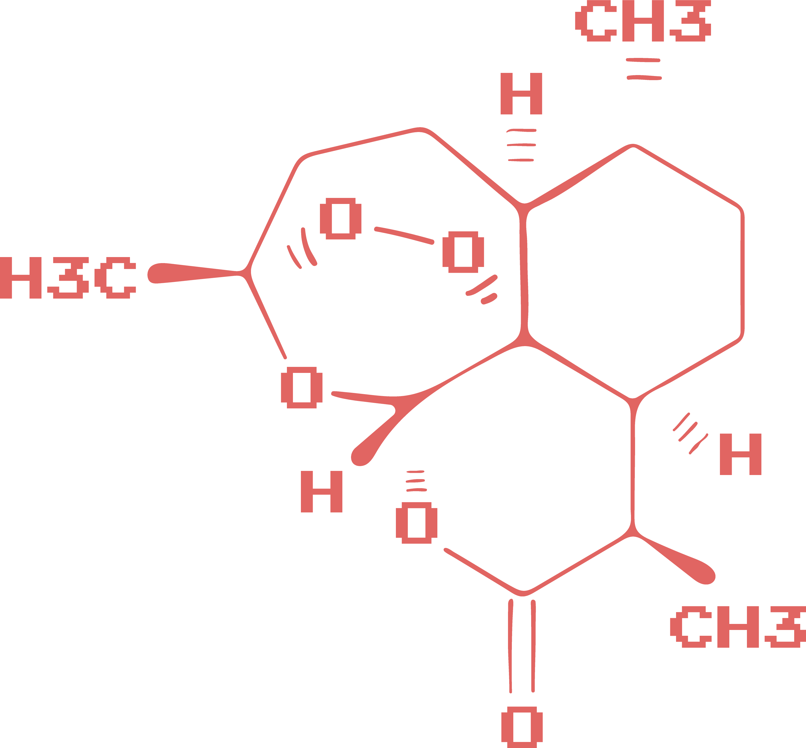

<!DOCTYPE html>
<html lang="en">
<head>
    <meta charset="UTF-8">
    <meta http-equiv="X-UA-Compatible" content="IE=edge">
    <meta name="viewport" content="width=device-width, initial-scale=1.0">
    <title>Flower</title>
    <link rel="stylesheet" href="assets/css/reset.css" type="text/css">
    <link rel="stylesheet" href="assets/css/main.css" type="text/css">
    <script src="assets/js/jquery-3.4.1.min.js"></script>
    <script src="assets/js/main.js"></script>
</head>
<body>


    
</body>
</html>
<div class="container">

      <div class="cell">
    
        <div class="content molecule">
        
        </div>
    
      </div>
    
      <div class="cell">
    
        <div class="content crown">
        
        </div></a>
    
      </div>
    
      <div class="cell">
    
        <div class="content combfact">
        There are all sorts of shapes to be found in flora. Conifers are in the shape of cones (hence the name), dew drops that coalesce on the leaves of plants are spheres, and salt granules are perfect cubes.  <br /> <br />
        But the most common shape you’ll find in nature, and the one that most astounds mathematicians, is the hexagon. These six-sided shapes are everywhere! Beehives, insect eyes, and snowflakes are all made up of hexagons. And while free-floating bubbles are often spheres, when a bunch of bubbles mash up against one another, they turn into hexagons!
      </div>
    </div>
      <div class="cell">
       
        <div class="content web">
              
        </div>
    
      </div>
    
      <div class="cell">
    
        <div class="content ">
        
        </div>
    
      </div>
    
      <div class="cell">
    
        <div class="content diamond">
            
       
        </div>
    
      </div>
    
    </div>

